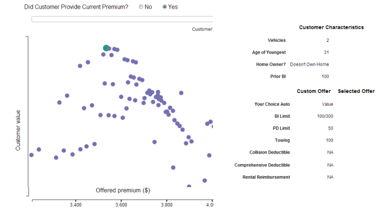

 Each page represents a quote. Each dot on the grid represents a possible price, given some combination of limits, deductibles and package selection. The position of the dot represents both its cost in premium and the likelihood the customer will ultimately purchase a policy. The customer characteristics at the top of the screen represent what this particular quote characteristics were.
The colored dot represents the quote that would be initially presented to the agent. The product options that correspond to that quote apprear on the right hand side under "Custom Quote". If you are using a modern browser, you can click on other quotes to see how the limits/deductibles/package options change. These will be represented with an orange dot and will show up in "Selected Quote."
When you click "Yes" to the "Did the customer provide current premium" question, a slider appears. This slider represents a customer's current premium. You can slide it to the left to represent a customer paying very little for their current insurance, or to the right to represent a customer paying a lot.